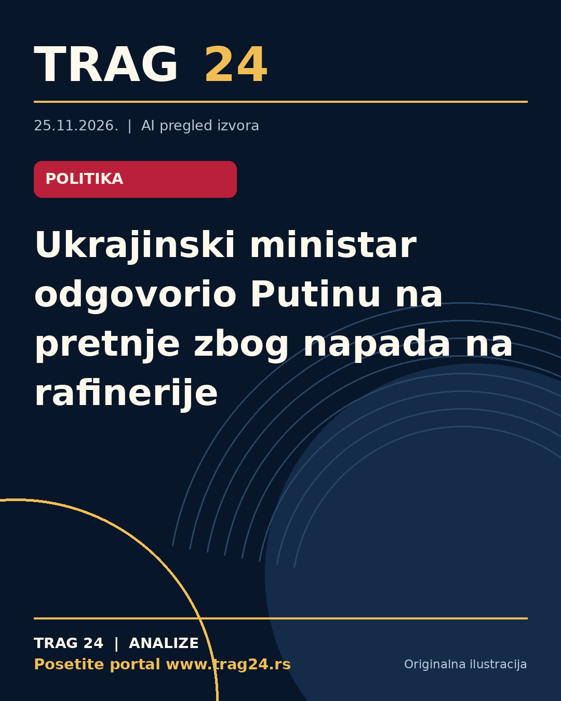

Ukrajinski ministar odgovorio Putinu na pretnje zbog napada na rafinerije

ŠTA SE DOGODILO
Ministar spoljnih poslova Ukrajine Andrij Sibiga odgovorio je večeras na pretnje predsednika Rusije Vladimira Putina o odmazdi zbog ukrajinskih napada na ruske rafinerije nafte. Sibiga je poručio Putinu da, ukoliko mu smetaju napadi na rafinerije i vojne ciljeve, može jednostavno da naredi okončanje rata.
HRONOLOGIJA
Tokom sastanka o energetskom sektoru, ruski predsednik Vladimir Putin izrazio je nezadovoljstvo zbog ukrajinskih napada na ruske rafinerije, naglasivši neophodnost boljeg obezbeđenja tih objekata. Putin nije precizirao ni prirodu ni vreme eventualnog odgovora na te napade. Ukrajinski ministar Sibiga je na platformi Iks (X) reagovao porukom da Rusija ove godine nije napredovala u ciljevima invazije i da je, prema njegovim rečima, izgubila 432.000 vojnika.
ŠTA NAVODE IZVORI
Svi izvori prenose izjave Ministarstva spoljnih poslova Ukrajine i predsednika Rusije, uključujući poruke sa platforme Iks (X) i citate iz sastanka koji je preneo Interfaks. Sibiga navodi da je odgovor Ukrajine neizbežan, dok Putin upozorava na potrebu boljeg obezbeđenja rafinerija. Izvori ne navode dodatne detalje o eventualnim merama koje bi Rusija mogla preduzeti.
ŠTA JE POTVRĐENO
Potvrđeno je da je ukrajinski ministar spoljnih poslova javno reagovao na pretnje ruskog predsednika putem platforme Iks (X). Putinu je prenet zahtev za boljom zaštitom energetskih objekata, kao i upozorenje o mogućoj odmazdi zbog napada. Takođe je potvrđeno da Putin nije precizirao konkretan način ili vreme odgovora na napade.
ŠTA NIJE POTVRĐENO
Nije potvrđeno kako će Rusija reagovati na napade na rafinerije, ni da li će doći do eskalacije sukoba na direktan način. Nema informacija o eventualnim vojnim ili diplomatskim odgovorima, niti o daljim planovima obe strane. Takođe, podaci o broju ruskih žrtava nisu potvrđeni nezavisnim izvorima.
ŠTA OSTАJE OTVORENO: Ostaje nepoznato da li će Putin konkretno preduzeti dodatne mere u cilju zaštite svojih rafinerija i na koji način. Takođe nije jasno kako će se dalji tok sukoba odraziti na ukupnu bezbednosnu situaciju i mogućnost pregovora za okončanje rata. Sporne ostaju i informacije o stvarnim gubicima na ruskoj strani koje je izneo Sibiga.
Izvori
- https://n1info.rs/svet/ukrajinski-ministar-odgovorio-putinu-ako-vam-smetaju-napadi-na-rafinerije-okoncajte-rat/
- https://www.danas.rs/svet/ukrajinski-ministar-odgovorio-putinu-ako-vam-smetaju-napadi-na-rafinerije-okoncajte-rat/
- https://www.vijesti.me/svijet/evropa/837999/ukrajinski-ministar-odgovorio-putinu-ako-vam-smetaju-napadi-na-rafinerije-okoncajte-rat
Ova analiza je pripremljena uz pomoć veštačke inteligencije na osnovu javno dostupnih izvora. Navodi izvora nisu nužno nezavisno potvrđeni.